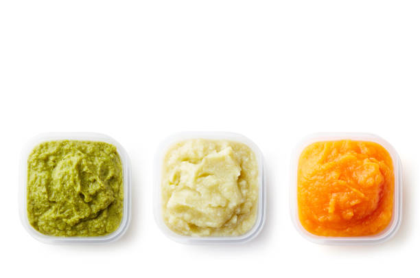

Recipes for 6-8 Months
Simple, nutritious purees and mashed foods for your baby's first solid foods journey

Sweet Potato Puree
Ingredients:
- 1 medium sweet potato
- Breast milk or formula (for consistency)
Instructions:
- Peel and cut sweet potato into small cubes
- Steam until very tender (about 15 minutes)
- Blend until smooth
- Add milk/formula to achieve desired consistency
Tips:
Start with a thinner consistency and gradually thicken as baby adjusts to solid foods.

Apple and Pear Puree
Ingredients:
- 1 apple, peeled and cored
- 1 ripe pear, peeled and cored
- Water for steaming
Instructions:
- Cut fruits into small pieces
- Steam until soft (about 8-10 minutes)
- Blend until smooth
- Cool before serving
Tips:
Choose ripe, soft fruits for the smoothest puree. Can be frozen in ice cube trays for later use.

Basic Rice Cereal
Ingredients:
- 2 tablespoons iron-fortified rice cereal
- 4-5 tablespoons breast milk or formula
Instructions:
- Place cereal in a small bowl
- Gradually stir in warm milk/formula
- Mix until smooth and runny
Tips:
Start with a very thin consistency (almost liquid) and gradually thicken over time.

Banana Avocado Mash
Ingredients:
- 1 ripe banana
- 1/2 ripe avocado
- Breast milk or formula (optional, for consistency)
Instructions:
- Peel and mash the banana
- Scoop out and mash the avocado
- Combine both ingredients and mix well
- Add milk/formula if needed for smoother consistency
Tips:
Use very ripe bananas and fresh avocados. Best served immediately to prevent browning.

Carrot and Green Bean Puree
Ingredients:
- 2 medium carrots
- 1 cup fresh green beans
- Water for steaming
- Breast milk or formula (for consistency)
Instructions:
- Peel and chop carrots into small pieces
- Trim and cut green beans
- Steam vegetables until very tender (about 12-15 minutes)
- Blend until smooth, adding liquid as needed
Tips:
Can be frozen in small portions. Thaw overnight in refrigerator when needed.

Butternut Squash Puree
Ingredients:
- 1 cup butternut squash, peeled and cubed
- Water for steaming
- Breast milk or formula (optional)
Instructions:
- Peel and cut squash into small cubes
- Steam until very soft (about 15-20 minutes)
- Let cool slightly
- Blend until smooth, adding liquid if needed
Tips:
Rich in vitamin A and naturally sweet. Perfect for baby's first foods.